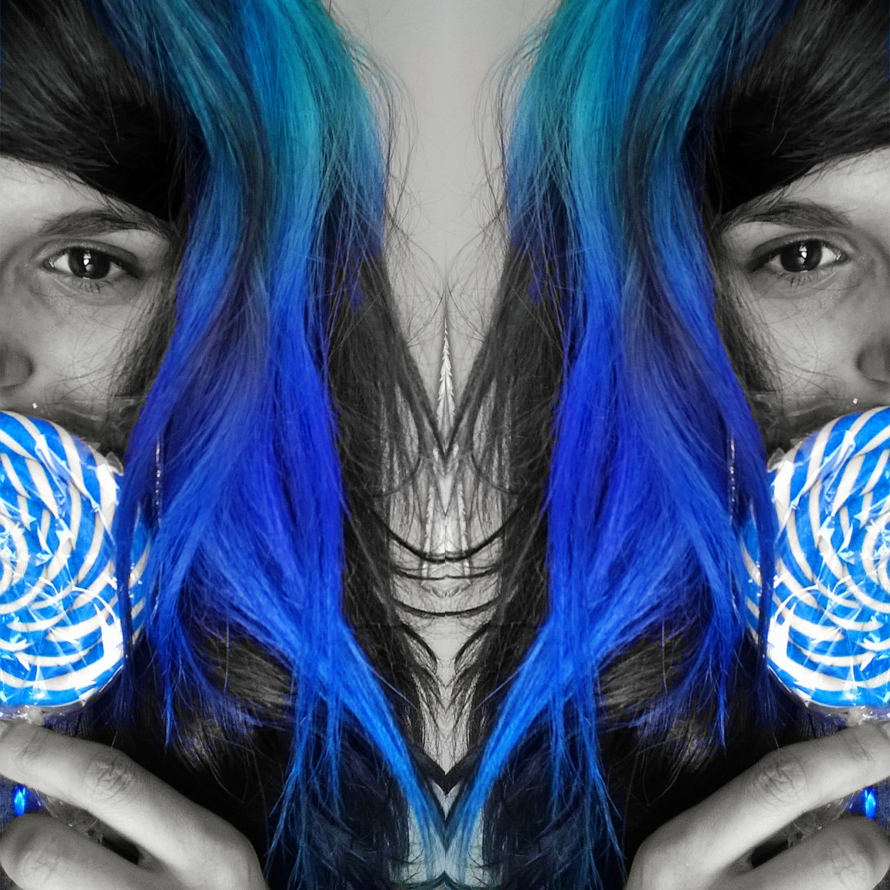
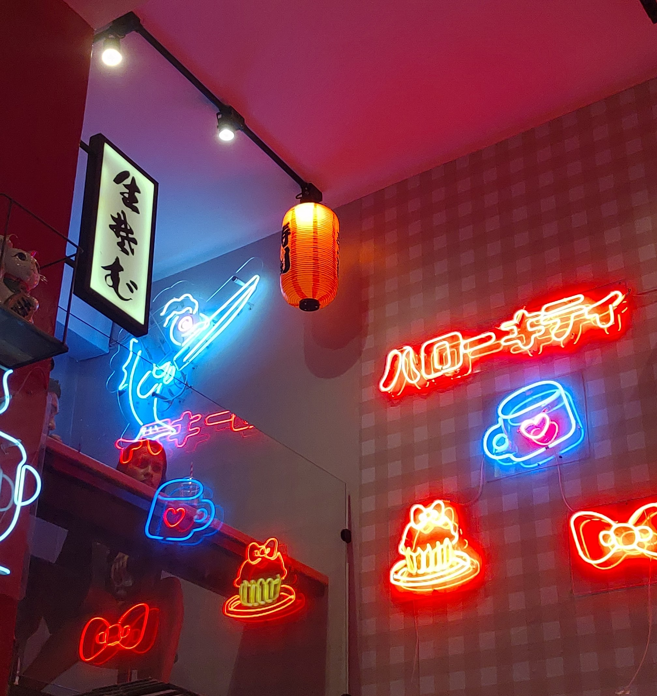
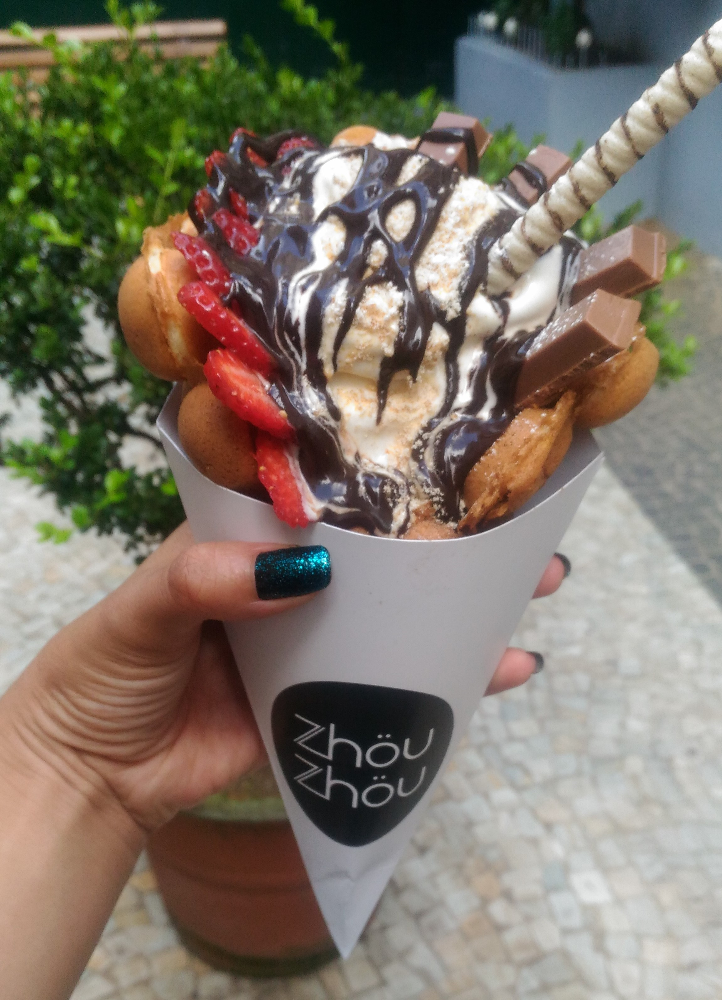
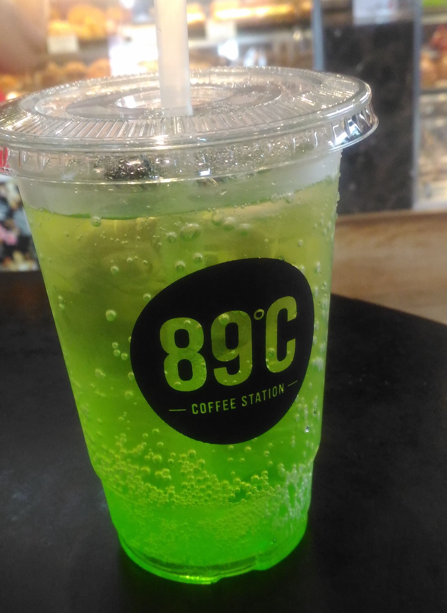

Uma garota que ama comer, mas não só isso... Ama comer comidinhas fofinhas e cheias de histórias... Fã da cultura japonesa, visita bastante a região da Liberdade {principalmente} para explorar esse pedacinho incrível que lembra a Ásia... Apesar dela NUNCA ter visitado o Japão, SABE que UM DIA com certeza irá conhecer. Porém essa página é sobre lugares incríveis e fofinhos que ela visitou aqui em SAMPA... Então venha se aventurar com ela nesse universo colorido e BEM doce!
Localizado no bairro da Liberdade, o restaurante é totalmente personalizado com a temática da Hello Kitty, transmitindo o charme e fofura do ícone da cultura japonesa em cada detalhe. Sinceramente um lugar de outro mundo, pois não é somente a decoração dessa personagem emplemática que encanta o local, mas sim suas comidas deliciosas e fofinhas... Para quem ficou interessado, o restaurante oferece hambúrguer de wagyu, um corte bastante conhecido no Japão, recheado com cheddar, além de bacon, sunomono e maionese (R$15,90 o simples e R$31,90 o triplo. Além dos doces, como biscoitos amanteigados, maçãs-do-amor, pães de mel, brownies, verrines, bolo recheado e macarrons, com preços de R$5,90 a R$12,90. As bebidas ficam por conta da pink lemonade, chá mate com hibisco e cafés decorados, nos valores de R$6,90 a R$8,90. O melhor, tudo vem decorado com o laço vermelho, cores e formato do rosto da Hello Kitty.
Quer conhecer e experimentar essas delícias? O Eat Asia + Hello Kitty fica localizada na Rua Thomaz Gonzaga, 61, Liberdade - São Paulo - SP
Um lugar íncrível que tem uma história BEM interessante por trás da criação desse doce MARAVILHOSO... Segundo o site da própria doceria o doce veio direto de Hong Kong no século 20, e ovos de galinha naquela época eram considerados um item de luxo. Em uma manhã bem aleatória e bem ensolarada em meados dos anos 50, um sábio vendedor de rua percebeu que o dono de uma loja estava tirando vários ovos rachados do seu carregamento matinal. O vendedor de rua teve então uma ideia e pediu ao dono da loja que lhe vendesse os ovos rachados com um desconto. O dono da loja ficou muito feliz por vender os ovos que ele iria jogar fora, e pensou que o vendedor de rua era bobo por querer pagar por ovos quebrados.
Entretanto, o vendedor de rua era um confeiteiro extremamente criativo que carregou empolgado sua frágil compra para casa, segurando-a perto do peito para proteger as cascas de qualquer outro possível dano. Quando chegou em casa, ele começou a bater os ovos com alguns ingredientes especiais até chegar a uma massa rica e cremosa. Ele derramou a mistura em um ferro quente em formato de bolhas e observou um waffle delicioso, leve e crocante surgir.
Desde sua origem, o bubble waffle tem suas bolhas características em forma de cascas de ovos, por ter sido conhecido inicialmente como 鷄蛋仔 (gai daan jai), que significa “pequenos ovos de galinha”. Sua popularidade cresceu, e hoje se tornou uma das comidas de rua mais icônicas de Hong Kong e agora de São Paulo com a sua chegada trazida pela Zhou Zhou. Seu cardápio consiste em 3 tipos de Bubble Waffle: • Bubble Waffle Sundae: bubble waffle com sorvete soft ou gelato (+R$3), coberturas e toppings ilimitados por apenas R$20,00 Inclusive super indico esse por ter uma experiência completa... • Bubble Waffle: bubble waffle com coberturas e toppings ilimitados por apenas R$16,00 • Só Waffle: bubble waffle com uma cobertura por apenas R$12,00
Quer conhecer e experimentar essa delícia? Ela está localizada na Alameda Jaú, 494. Situada no coração de São Paulo, tem fácil acesso pelas estações de metrô Consolação e Paulista.
Localizada no bairro no coração do bairro da Liberdade a 89°C Coffee Station tem um cardápio bem variado, que vão do espanto a admiração de muitos clientes (inclusive a minha rs). Seus doces são baseados na confeitaria japonesa moderna, com influência europeia. Desta mistura, surgem criações delicadas no sabor, com o toque da estética japonesa. Entre muitas variedades de doces, se destaca o famoso bolo de melão (que inclusive é um dos meus favoritos), e nos quitutes salgados a deliciosa e disputada coxinha de catupiry. Apesar de não ser muito fã de café lá o seu menu de bebidas com café é bem variado e você pode desfrutar da experiência e influência oriental, com o Japanese Drip Coffee, coado com a técnica japonesa de extração do café especial. O Cold Brew da 89°C Coffee Station, é extraído pelo método Kyoto de gotejamento (12 horas) em uma torre Hario, única no Brasil. (Essa dica é para vocês viu amantes de café... Essa dica valiosa foi retirada do site oficial do restaurante/padaria). Mas a minha bebida favorita desse lugar é a soda americana de maça verde...
Quer conhecer e experimentar essas delícias? A 89°C Coffe Station está localizada na Praça da Liberdade, 169 - Liberdade, São Paulo - SP, 01503-010.